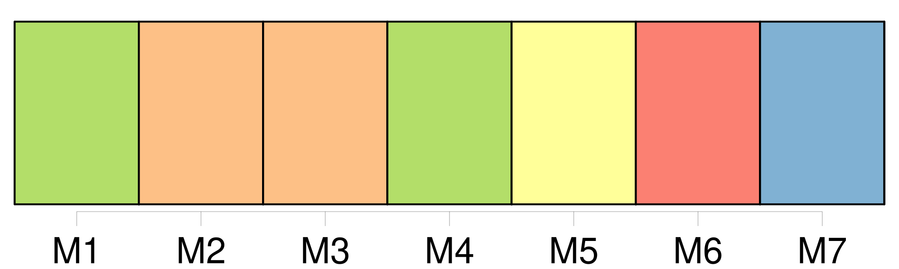

Longueur nb maillons : 21 mentions |
 |
[Où] alliez -vous? [6 phrases] — Et [où] alliez -vous, dans Paris?? [208 phrases] Mais il refusa avec une fierté inquiète ; il dit qu'il avait tout ce qu'il lui fallait, qu'il savait [où] aller. [96 phrases]
[Où] allez -vous? [2 phrases]
Il se risqua, il demanda, avec la peur d'une réponse fâcheuse : [1 phrases] [Un coin bien curieux du vieux Paris] , [cette rue -là] !! [Elle] tourne comme une danseuse, et les maisons [y] ont des ventres de femme grosse …… J' [en] ai fait une eau-forte pas trop mauvaise. [1 phrases]
[C'] est [là] que vous allez? Florent, soulagé, ragaillardi par la nouvelle que [la rue Pirouette] existait, jura que non, assura qu'il n'avait nulle part à aller. [1 phrases] — Ça ne fait rien, dit celui -ci, allons tout de même [rue Pirouette] La nuit, [elle] est d'une couleur!!
… Venez donc, [c'] est à deux pas. [5 phrases] Puis, en face, [rue Pirouette] , il montra, expliqua chaque maison. [22 phrases]
Puis, brusquement, s'arrêtant au milieu de [la rue] : [2 phrases] Comme il sortait de [la rue Pirouette] , une voix appela Claude, du fond de la boutique d'un marchand de vin, qui faisait le coin. [79 phrases] Il finit par s'accuser de son eau-forte de [la rue Pirouette] comme d'une faiblesse. [87 phrases]
Venez voir l'eau-forte de [la rue Pirouette] |

|
Il est possible de télécharger la ressource sur la page Ortolang |
Si vous avez des questions ou vous voyez des erreurs, merci d'envoyer un mail à silvia.federzoni89@gmail.com |